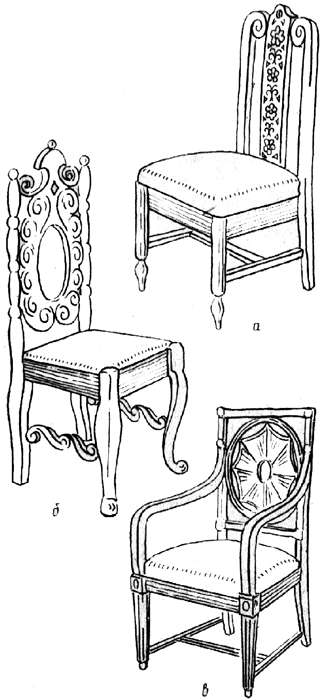
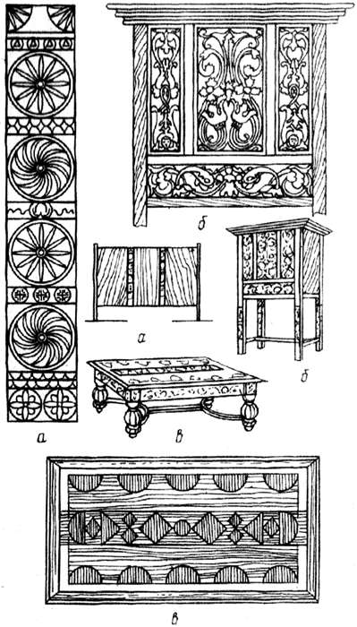
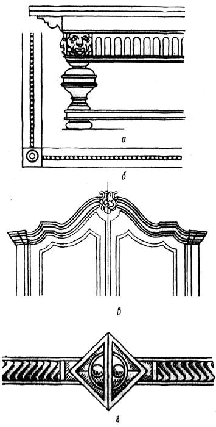

Орнамент в отделке мебели.

Орнаментальное украшение, как часть предмета, представляет собой самое простое художественное построение, основанное на принципах композиции. Изучая такие орнаментальные украшения, можно понять сущность того или иного композиционного приема, степень его значимости, силу воздействия и тем самым получить возможность использовать эти приемы и средства в своей работе. От орнамента легче перейти к композициям более сложным и развитым.
Орнамент возник из подражания формам живой природы. Рассматривая те или иные природные формы, легко заметить, что в их устройстве очень часто присутствует симметрия (листья, насекомые). Если одна половина предмета зеркально отражает другую, мы видим зеркальную симметрию (бабочка, кленовый лист). Если повторяемых частей несколько и собраны они вокруг одной точки, это будет пример центральной симметрии. Таковы в большей части цветы, снежинки, ряд морских животных. В центральной симметрии каждая часть состоит из двух зеркально симметричных половинок. Если же части предмета, собираемые вокруг центральной точки, несимметричны, образуется угловая симметрия, в которой несимметричная деталь как бы повернута на некоторый угол. Примером угловой симметрии может служить колесо турбины.
Симметрия – один из наиболее распространенных приемов композиции. Стулья, кресла, шкафы имеют зеркальную симметрию. Столешницы украшают орнаментом, построенным по угловой или центральной симметрии.
Кроме симметрии, в природе также часто наблюдается ритм, например в расположении почек на стебле, разноцветных пятен на перьях птиц и шкур зверей, в движении волн и др. Ритм также нашел свое выражение в орнаменте.
Распространенность симметрии и ее наглядность обусловили частое (решающее) присутствие симметрии и в орнаментах. Орнамент не висит в безвоздушном пространстве, он всегда расположен на каком-то предмете или его детали и зависит от предмета, его размеров, формы. Орнамент связан с предметом, поэтому и размещение орнамента на предмете обусловлено определенными художественно-композиционными требованиями. Без соответствия им орнамент оказывается неуместным: он либо велик, мал, немасштабен и т. п.
Итак, орнамент – определенное композиционными условиями предметное украшение, части которого размещены по отношению друг к другу в порядке, основанном на симметрии и ритме. Так, расположенный на спинке стула ряд резных розеток составит орнаментальную полосу. Поле, которое полоса занимает, определено размерами и границами спинки и необходимостью гармоничного соотношения этого поля и оставшейся части спинки, составляющей фон для орнаментальной полосы.
В орнаменте существует понятие раппорта, т. е. ритмичного или симметричного чередования одинаковых изображений.
Орнаментальные композиции могут иметь форму полос и заполнять участок плоскости. Орнаменты, основанные на центрально-лучевой симметрии, относятся к типу розетковидных. Встречаются орнаменты, в которых сочетаются полосовые, плоскостные и розетковидные элементы.

Рис. 23. Орнаментальные украшения спинки стула: а – в виде орнаментальной полосы; б – с частичным заполнением поля; в – розетковидный
Наиболее характерная черта построения орнамента – контраст, представляющий собой разницу между смежными изображениями или полем и рисунком. Достигается разностью цвета, тона или рельефа, сопоставлением линий различной формы. Иногда фон рельефа подкрашивают.
Создавая орнамент, сначала надо продумать его геометрическую основу, которая будет структурой орнамента. Когда структура будет легко читаемой, композиционно организованной, в ней будут выделены главные и подчиненные части, определен уровень значимости отдельных частей, тогда переходят к разработке деталей, определяют степень их контраста и способы образования этого контраста.
В украшениях орнаментального характера следует учитывать различие пространственного положения осей симметрии и их построения, исходя из того, как они будут расположены на предмете. В соответствии с природными законами развития формы, обусловленными существованием сил тяжести, изменение форм орнамента вдоль вертикальной оси обязательно, причем формы более устойчивые и монументальные располагаются в нижней части.
Горизонтальная ось орнамента может располагаться в вертикальной и горизонтальной плоскостях. В первом случае верхняя часть орнамента должна отличаться от нижней, во втором изменение формы необязательно, желательно лишь ее развитие от центра к периферии.

Рис. 24. Построение орнамента в зависимости от положения его оси симметрии: а – развитие по вертикальной оси; б – по горизонтальной оси в вертикальной плоскости; в – по горизонтальной оси в горизонтальной плоскости

Рис. 25. Примеры орнаментальных деталей: а, б – при повороте формы; в – по границе формы; г – при разъеме поверхности по оси симметрии
В соответствии с правилами композиции для орнамента также обязательно соблюдение соответствия его формы условиям ее нахождения в композиции. Изменение условий влечет за собой изменение формы. Так, краевые части орнамента должны отличаться от центральной, при повороте формы детали должны естественно сочетаться в углу поворота, угловые элементы должны отличаться от линейных, рядовых; элементы, примыкающие к пространству (граница предмета), делаются более развитыми, чем примыкающие к внутренней части. Форма орнаментальных деталей в большой степень зависит от материала и технологии его обработки.